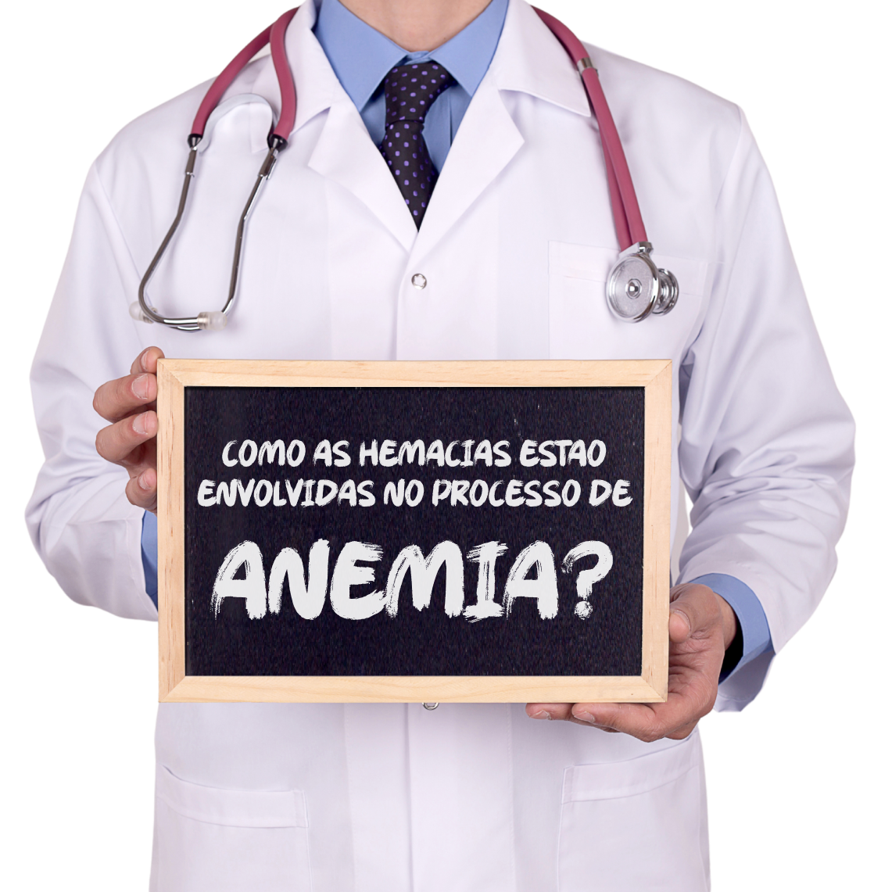
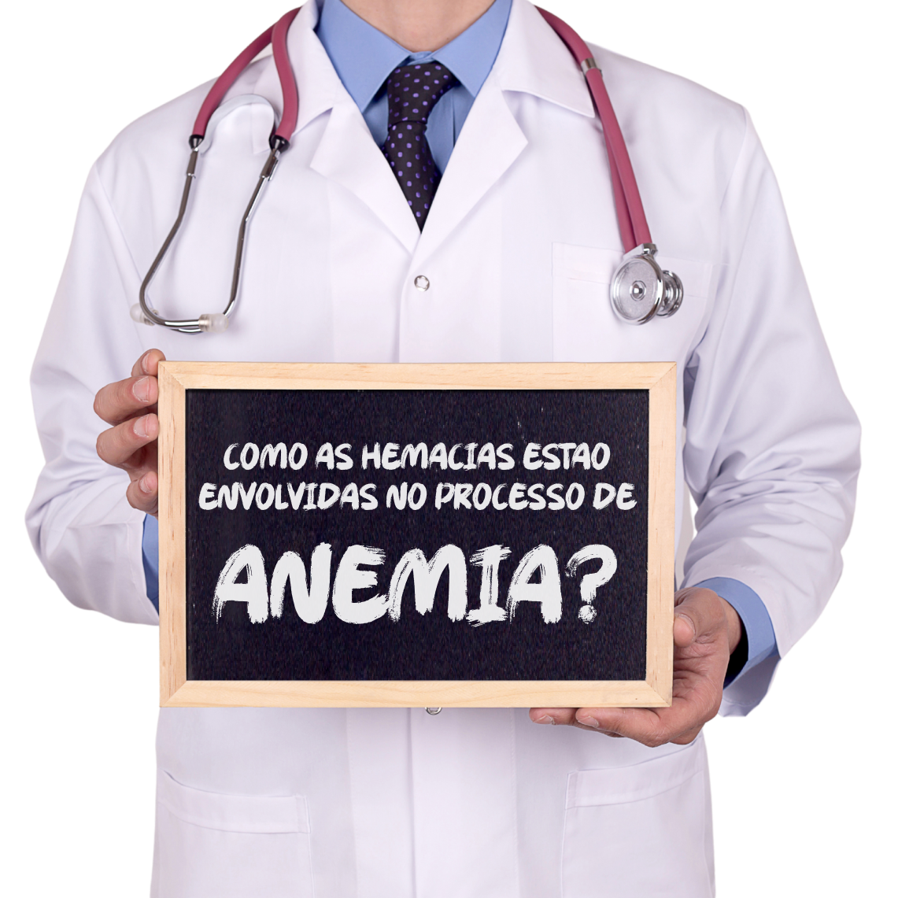

Quando ocorre decréscimo na síntese de hemácias, aumento na sua taxa de destruição, produção de hemácias deficientes, perda de sangue ou ainda uma redução na produção de hemoglobina, temos as anemias. Dentre os principais tipos de anemia, podemos citar a anemia falciforme, a anemia ferropriva e talassemias.
A anemia falciforme é uma doença genética caracterizada pela presença de hemácias com formato de FOICE, que possuem uma hemólise rápida e geralmente causam obstrução nos capilares. Essa anemia, por ter causas genéticas, não é tratada com aumento de ferro na dieta. Quem possui esse distúrbio, é resistente à malária, por isso ele é comum em áreas que possuem alta incidência dessa doença.